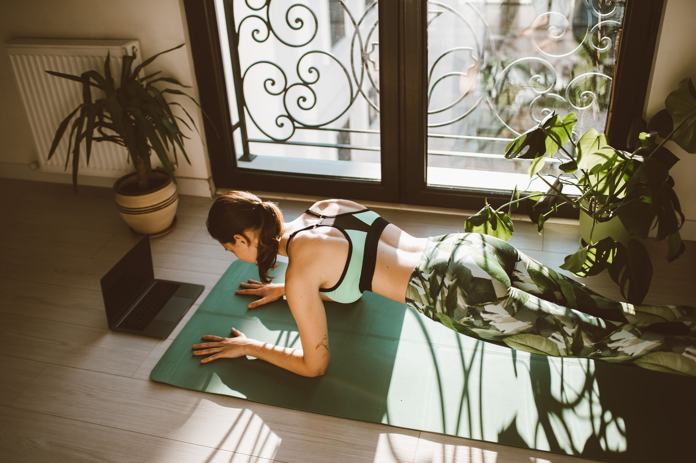
Марина, 34 года, менеджер проектов
Тариф «С куратором»
−5,8 кг
−8 см в талии
«Тренировалась в 7 утра, до первого созвона. Платье на корпоратив купила на размер меньше».
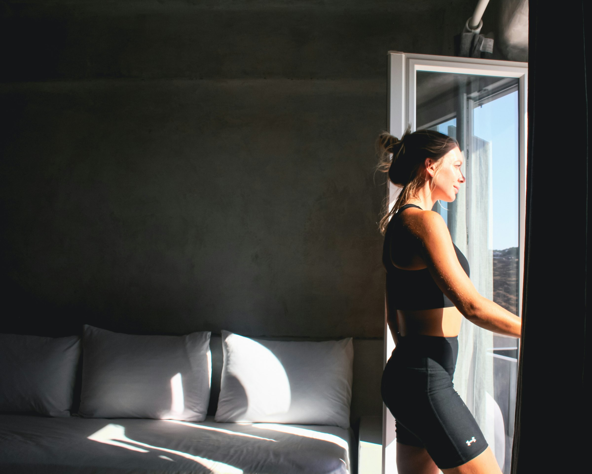
Онлайн-программа Анны Соколовой для женщин
от 4 900 ₽, можно долями
Не знаешь, с чего начать? Узнай свой старт за 1 минутуВыбери, что ближе
Сейчас
В ФОРМЕ
30–40 минут дома, когда удобно тебе. Дорога до зала — 0 минут.
Выбери одно окно на 3–4 дня в неделю. 35 минут — меньше 3% суток.
Сейчас
В ФОРМЕ
Анна — сама мама двоих и возвращалась в форму после родов. 30 минут дома, пока малыш спит. Начинаем после разрешения врача.
У каждого малыша свой режим — это просто пример. Сон сорвался? Тренировка подождёт до вечера.
Сейчас
В ФОРМЕ
Первые две недели — техника и привычка, а не рекорды. Куратор замечает, если ты пропала, и пишет первой.
Одно время и одно место — и не нужно каждый раз себя уговаривать.
−4–7 кг
−6–10 см в талии
*Средний результат выпускниц за 8 недель. У каждой он свой — зависит от старта, здоровья и регулярности.

Тариф «С куратором»
−5,8 кг
−8 см в талии
«Тренировалась в 7 утра, до первого созвона. Платье на корпоратив купила на размер меньше».
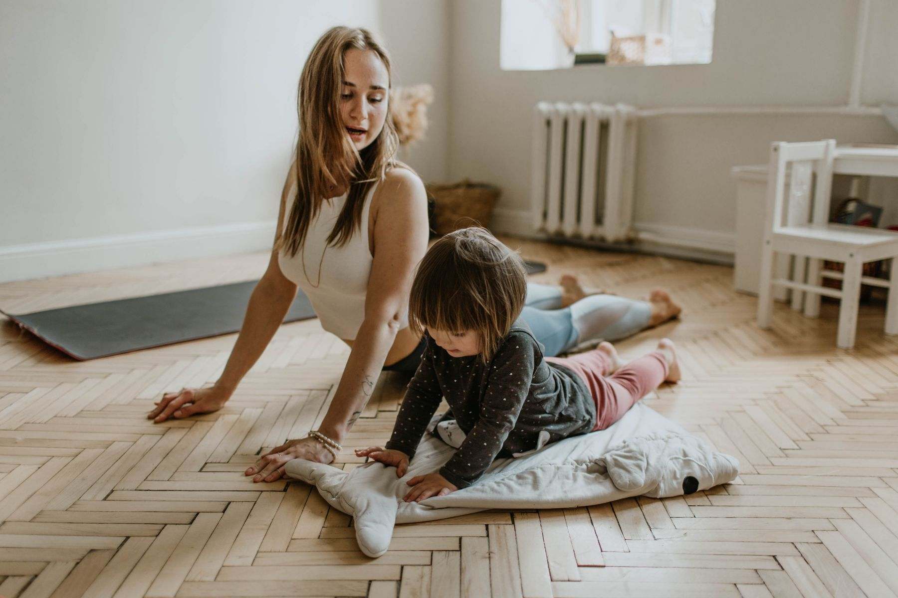
Тариф «С куратором»
−6,4 кг
−9 см в талии
«Начала после разрешения врача. Занималась в дневной сон. Куратор заметила, что проваливается поясница, — поправили в первую же неделю».
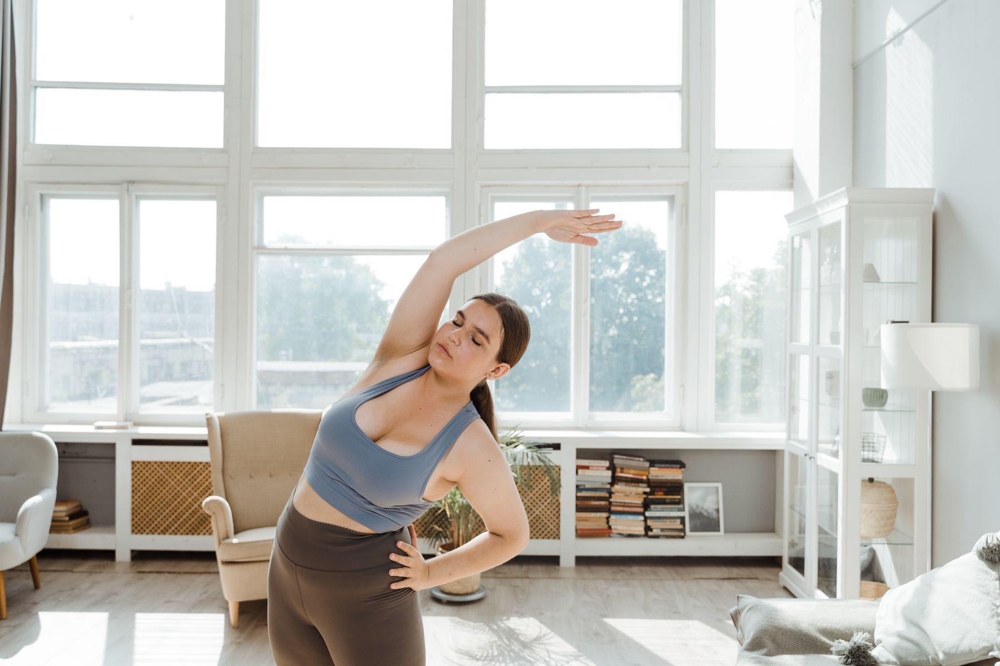
Тариф «С куратором»
−4,1 кг
−6 см в талии
«Начинала шесть раз. Это первый раз, когда я дошла до 8-й недели».
Сегодня впервые за год застегнула джинсы, которые носила до беременности!
Думала, брошу на второй неделе, как обычно. Сегодня шестая. Спасибо Дарье, что писала, когда я пропала
Талия −7 см, вес почти не изменился. Сначала расстроилась, а потом надела старое платье
Программа
«После родов я собрала для себя систему: короткие тренировки дома, нормальная еда без запретов и кто-то рядом, кто не даст бросить. Это и есть „Перезагрузка“».
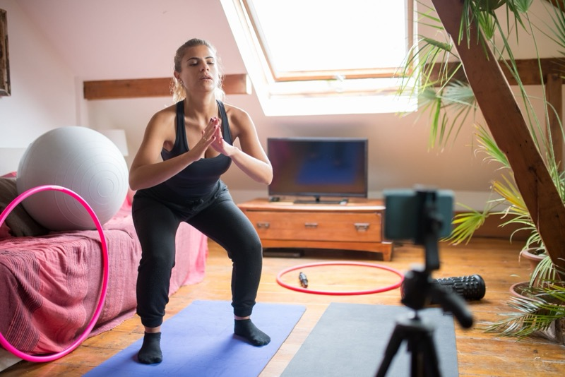
2–15 ноября
Ставим технику. 3 тренировки по 30 минут. Стартовые замеры.
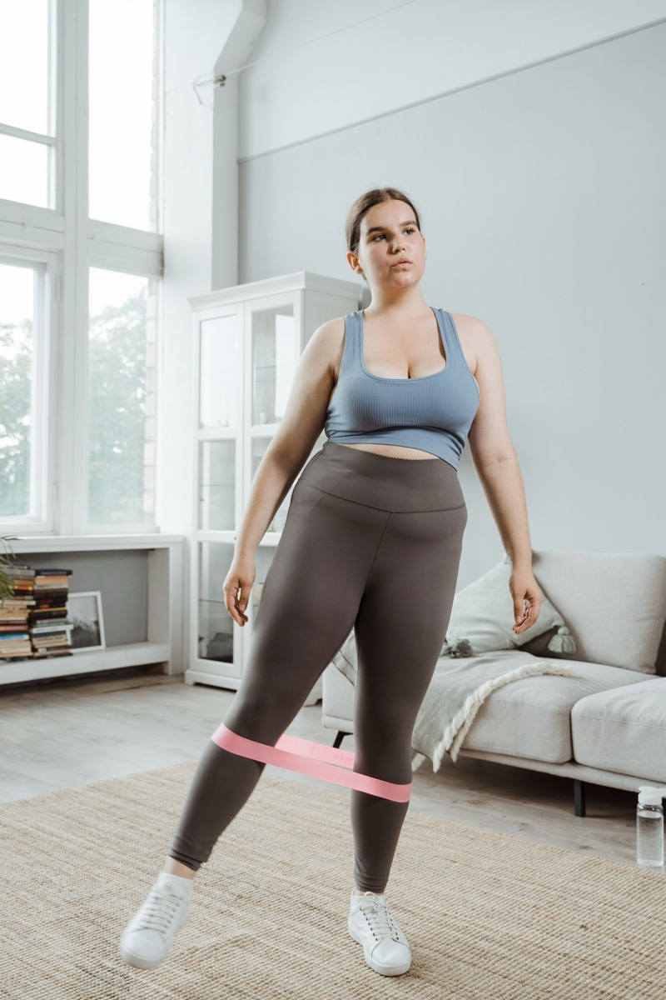
16–29 ноября
4 тренировки в неделю, добавляем резинки. Первая сверка замеров.
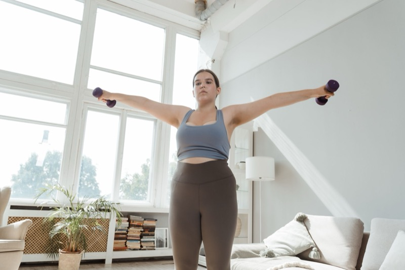
30 ноября – 13 декабря
Гантели и рост нагрузки. Эфир о том, что делать, если вес встал.
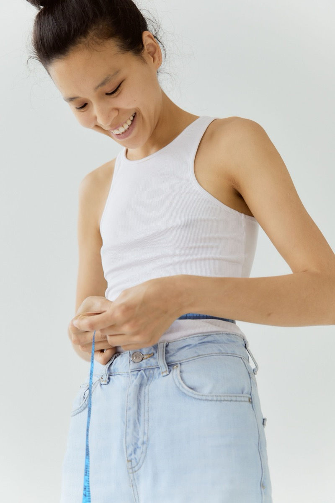
14–27 декабря
Итоговые замеры. План, как сохранить результат в праздники.
Финиш За 4 дня до Нового года
И что это даёт тебе
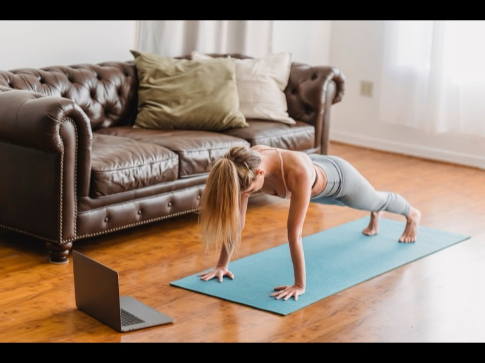
Без инвентаря или с резинками и гантелями.
Результат для тебя
Тренировка встаёт в твой день без дороги в зал. К 8-й неделе 3–4 занятия в неделю становятся привычкой.
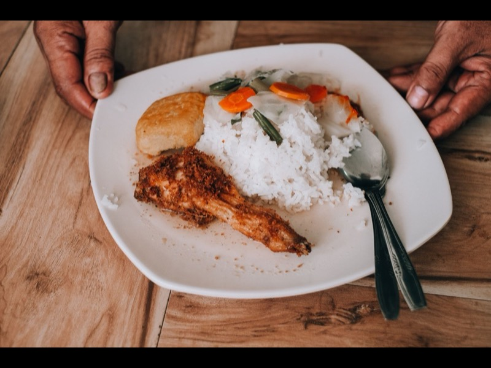
Обычные продукты, любимую еду не вычёркиваем.
Результат для тебя
Ешь привычную еду и не срываешься: когда нет запретов, не с чего срываться.
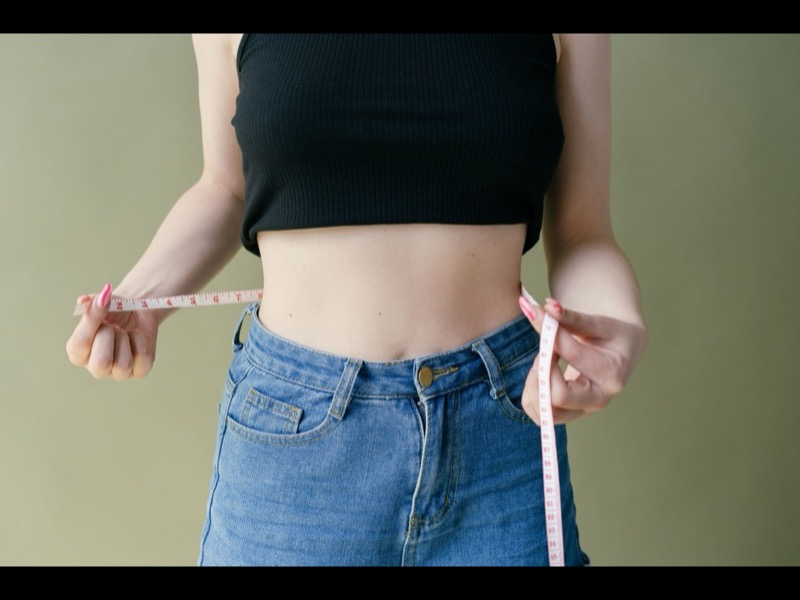
Видно, как ты меняешься, даже когда весы стоят.
Результат для тебя
Видишь сантиметры и силу, даже когда весы стоят. Меньше поводов бросить на третьей неделе.
Живые люди отвечают на «а так нормально?».
Результат для тебя
Ты не одна: на вопрос «а так нормально?» отвечают живые люди, а не комментарии под видео.
Вопросы, разборы, поддержка в середине пути.
Результат для тебя
Разбираешь свои вопросы с тренером, который сам вернулся в форму после родов.
Проверка техники
Снимаешь 2–3 упражнения на телефон — куратор отвечает, что поправить. По секундам.
Таймкоды — чтобы ты сама увидела, где ошибка
Ответ — в течение 24 часов
Видео видит только твой куратор
Проверка техники есть в тарифах «С куратором» и «Личное ведение».
Дарья
куратор
в сети
Тренировки и питание — во всех тарифах. Разница — сколько поддержки рядом.
Тебе подходит по квизу
Уже тренировалась и держишь ритм сама
4 900 ₽
с 28 октября — 5 900 ₽
Входит
Не входит
Бонус ранней записи
эфир с Анной «Праздники без отката»
Новичкам и мамам после родов советуем «С куратором»
Тебе подходит по квизу
Основной
Новичкам, мамам и тем, кто уже бросал
9 900 ₽
≈ 177 ₽ в день
с 28 октября — 11 900 ₽
Входит
Бонусы ранней записи
Проверка техники и эфиры — как в «Личном ведении», но в 2,5 раза дешевле
Тебе подходит по квизу
Нужен план под тебя и разговор с Анной лично
24 900 ₽
с 28 октября — 29 900 ₽
Входит
Бонус ранней записи
первый созвон — до старта
20 мест на поток
Тренировка — 30–40 минут дома, когда удобно: утром, в обед или когда дети уснули. Пропустила день — продолжаешь со следующего, план не сгорает.
Ничего страшного. Тренировки остаются в личном кабинете, куратор поможет вернуться в ритм без «догонялок». Доступ к материалам — 6 месяцев.
Только после разрешения врача — это важно. Если было кесарево или есть диастаз, скажи куратору: подскажем, чем заменить упражнения. Анна сама возвращалась в форму после родов.
Видео бывают отличными, но в них никто не смотрит на твою технику и не замечает, что ты пропала. Здесь есть куратор, чат и план по неделям. Бросают обычно от одиночества, а не от лени.
Первые 2 недели — техника и привычка, а не рекорды. Хватит коврика, резинки и гантели понадобятся позже. Ты дома — сравнивать себя не с кем.
Первые 2 недели — ничего. С 3-й недели — набор резинок, примерно 1 000 ₽. С 5-й — пара гантелей 2–4 кг, примерно 2 000 ₽. На старте их можно заменить бутылками с водой.
В «Сама» — тренировки, питание и трекер. В «С куратором» к ним добавляется живой человек: чат, проверка техники каждую неделю и эфиры с Анной. Новичкам и мамам после родов — сюда.
Всё ещё сомневаешься? Квиз подскажет за минутуЕсли ты беременна, недавно родила и врач ещё не разрешил нагрузки, или у тебя есть противопоказания к спорту — сначала к врачу. Мы честно скажем, если тебе пока рано, и вернём деньги.
Программу прошли 12 000+ женщин, оценка — 4,9. Работаем по договору-оферте, чек приходит на почту, реквизиты — внизу страницы. В течение 14 дней с начала программы вернём деньги, если не подойдёт.
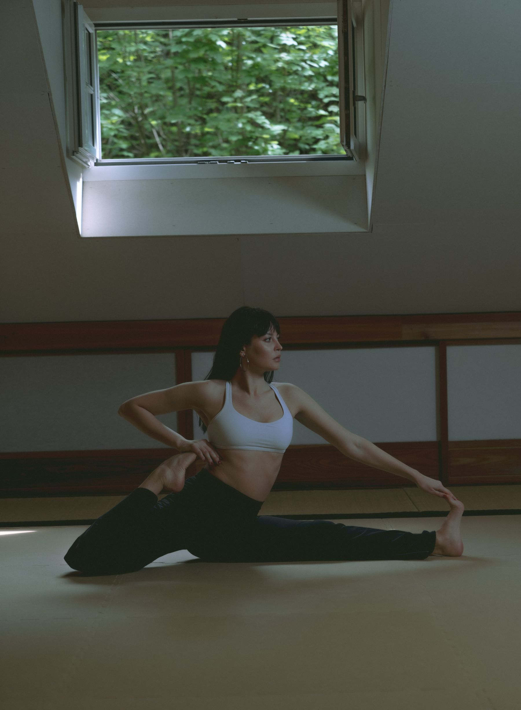
Старт — 2 ноября. Ранняя цена — до 27 октября.
Старт — 2 ноября. Успей записаться до 1 ноября.
Марафон «Плоский живот дома»: короткая тренировка каждый день и разбор питания от Анны. Бесплатно.
14 дней на возврат. Можно долями.
Не открылся Telegram? Скопируй ссылку: t.me/forma_bot